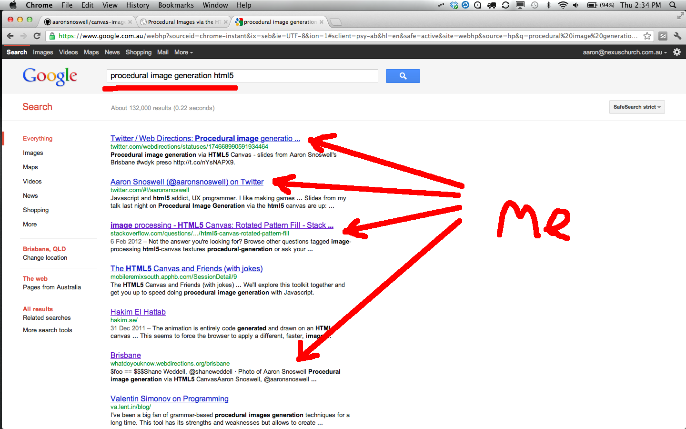
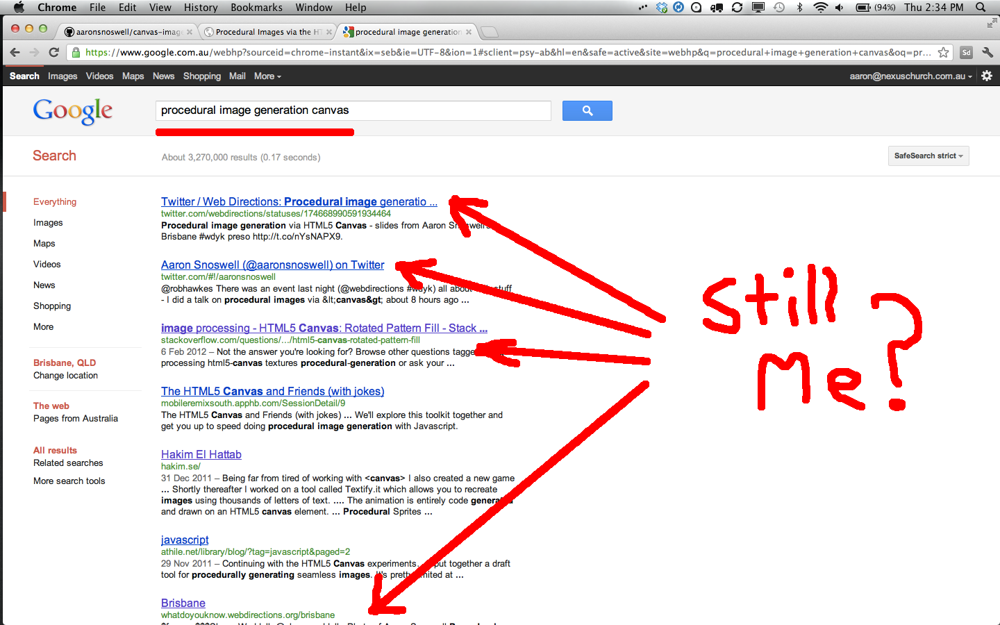
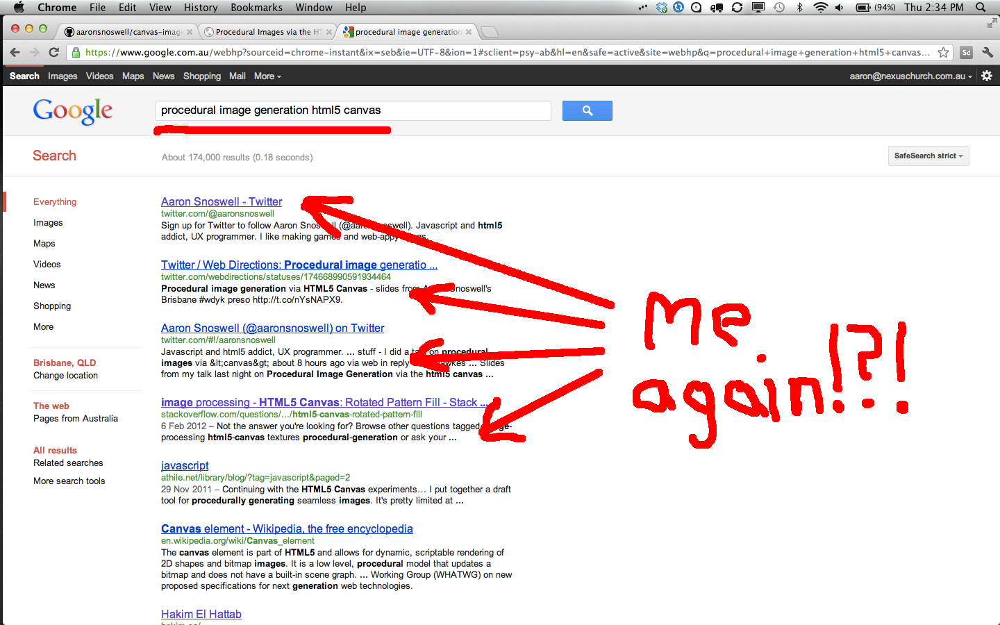
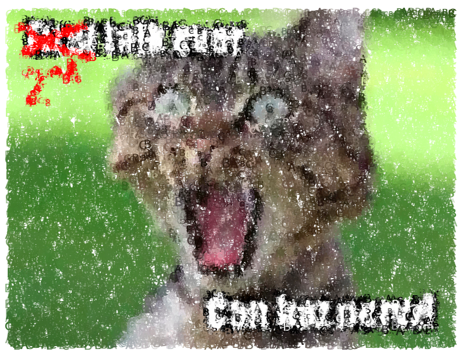
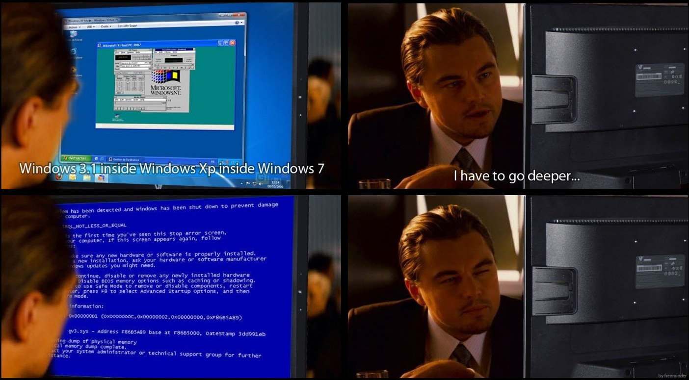
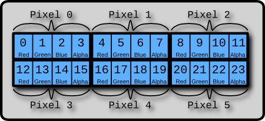
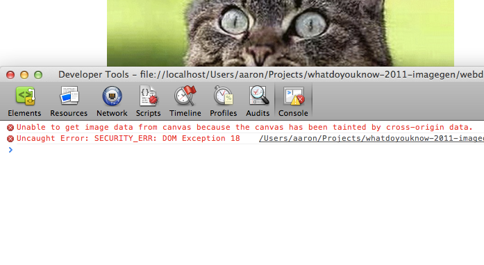

Procedural Images
via the HTML5 <canvas>
Aaron Snoswell (@aaronsnoswell)
Mar 15, 2012
Aaron Snoswell (@aaronsnoswell)
Mar 15, 2012



with(m=Math)C=cos,S=sin,P=pow,R=random;c.width=c.height=f=500;h=-250;
function p(a,b,c){if(c>60)return[S(a*7)*(13+5/(.2+P(b*4,4)))-S(b)*50,
b*f+50,625+C(a*7)*(13+5/(.2+P(b*4,4)))+b*400,a*1-b/2,a];A=a*2-1;
B=b*2-1;if(A*A+B*B<1){if(c>37){n=(j=c&1)?6:4;o=.5/(a+.01)+C(b*125)*
3-a*300;w=b*h;return[o*C(n)+w*S(n)+j*610-390,o*S(n)-w*C(n)+550-j*350,
1180+C(B+A)*99-j*300,.4-a*.1+P(1-B*B,-h*6)*.15-a*b*.4+C(a+b)/
5+P(C((o*(a+1)+(B>0?w:-w))/25),30)*.1*(1-B*B),o/1e3+.7-o*w*3e-6]}
if(c>32){c=c*1.16-.15;o=a*45-20;w=b*b*h;z=o*S(c)+w*C(c)+620;
return[o*C(c)-w*S(c),28+C(B*.5)*99-b*b*b*60-z/2-h,z,(b*b*.3+P((1-(A*
A)),7)*.15+.3)*b,b*.7]}o=A*(2-b)*(80-c*2);w=99-C(A)*120-C(b)*(-h-c*4.9)+
C(P(1-b,7))*50+c*2;z=o*S(c)+w*C(c)+700;return[o*C(c)-w*S(c),B*99-C(P(b,
7))*50-c/3-z/1.35+450,z,(1-b/1.2)*.9+a*.1, P((1-b),20)/4+.05]}}
setInterval('for(i=0;i<1e4;i++)if(s=p(R(),R(),i%46/.74)){z=s[2];
x=~~(s[0]*f/z-h);y=~~(s[1]*f/z-h);if(!m[q=y*f+x]|m[q]>z)m[q]=z,
a.fillStyle="rgb("+~(s[3]*h)+","+~(s[4]*h)+","+~(s[3]*s[3]*-80)+")",
a.fillRect(x,y,1,1)}',0)

// Create an off-screen canvas
var canvas = document.createElement("canvas"),
ctx = canvas.getContext("2d");
canvas.width = canvas.height = 400;
// Draw stuff
ctx.translate(200, 200)
ctx.rotate(45 * Math.PI / 180);
ctx.fillStyle = "rgb(200,0,0)";
ctx.fillRect(-100, -100, 200, 200);
// Create image with toDataURL
var img = new Image();
img.src = canvas.toDataURL("img/png");
// !Important! Wait for image to load
img.onload = function() {
document.body.appendChild(img);
}
var canvas = document.createElement("canvas"),
ctx = canvas.getContext("2d");
// filRect, bezierCurveTo etc
var img = new Image();
img.src = canvas.toDataURL();img.onload = function() {
// Attach image to DOM
}

imdata = ctx.getImageData(0, 0, canvas.width, canvas.height);
for(var x=0; x<canvas.width; x++) {
for(var y=0; y<canvas.height; y++) {
var offset = (x + y*canvas.width)*4;
// Null out the Red and Green channels
imdata.data[offset + 0] = 0;
imdata.data[offset + 1] = 0;
// Leave the Blue and alpha channels
//imdata.data[offset + 2] = 0;
//imdata.data[offset + 3] = 0;
}
}
ctx.putImageData(imdata, 0, 0);var canvas = document.createElement("canvas"),
ctx = canvas.getContext("2d"),
imdata = ctx.createImageData(10, 10);

var offset = (x + y*canvas.width)*4;
putImageData ignores current canvas transforms> >> > > *
Uint8ClampedArray -> 10 - 100% speed improvement